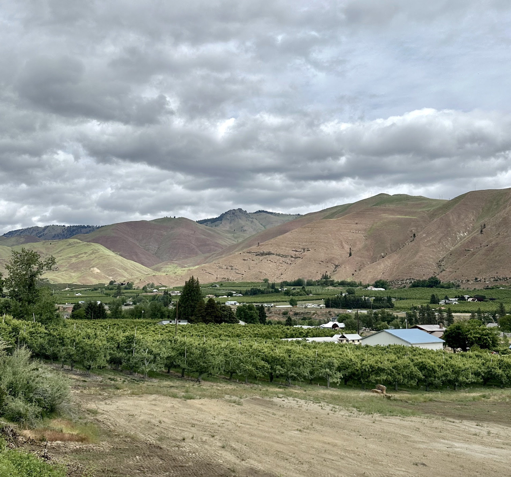
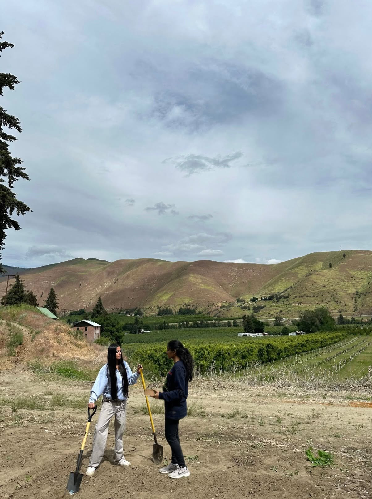
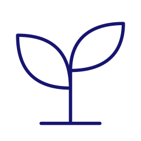
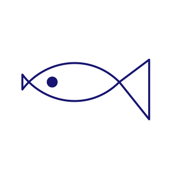
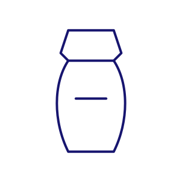
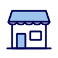

staso
You don’t
prompt AI.
AI prompts you.
The blank prompt
is the problem.
↗
The blank prompt
is the problem.
↗
The blank prompt
is the problem.
↗
The blank prompt
is the problem.
↗
Small business owners moving into
e-commerce with non-traditional products.

FarmingBabysitting

FishingFirewood
Moving

Funeral servicesReligious goods
Pet care
We understand each customer’s vertical
01 / Real examples
→
02 / Guided questions
→
03 / Vertical-fit store

The app fits the business — not the other way around.
Competitive advantage
Store buildersShopify, Wix
Vibe coding toolsAn open-ended prompt
stasoA guided starting point
Builds e-commerce
websites
websites
✓
✓
✓
Guides users with
structured questions
structured questions
–
✓
✓
Covers legal, trust
& logistics blind spots
& logistics blind spots
✓
–
✓
Pulls real examples
for your vertical
for your vertical
–
–
✓
Tailored for niche
e-commerce verticals
e-commerce verticals
–
–
✓
✓ Supported – Not assessed
The future of building isn’t
getting better at prompting.
It’s AI that knows
what to ask.
staso